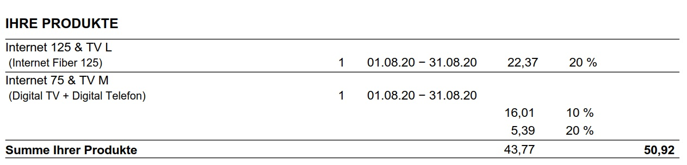

Ende Mai wurde ich via Telefon überredet von meinem alten UPC Tarif auf einem Magenta Tarif zu wechseln (von Internet 75 + TV M auf Internet 125 + TV L). Soweit so gut, jetzt wurde mir aber auf den bisherigen Rechnungen BEIDE Tarife in Rechnung gestellt !!! Telefonieren bzw. WhatsApp hat keine Änderung gebracht, ich muss dazu vermutlich in einen Shop. Ich zahle doch nicht 2 Tarife.

Magenta Rechnung August Seite 2.pdf
Hallo Josef,
bitte beachte, dass wir hier in der Community keinen Support anbieten. Deine Frage muss von einem Servicemitarbeiter direkt geklärt werden, warum die Rechnung nach der Umstellung noch nicht korrekt ist.
So wie es für mich aussieht hat sich der neue TV Dienst noch nicht installiert. Es wird das Pack nicht doppelt verrechnet sondern Internet 125 auf der ersten und auf der zweiten Position Digital TV M und das Telefon. Kannst du die Sender für TV L schon empfangen?
Ich ersuche dich daher die Rechnung direkt prüfen zu lassen, die Mitarbeiter können in der Datenbank nachsehen ob die Dienständerung korrekt abgeschlossen wurde.
Liebe Grüße
Steffi
Warum ist die erste Rechnung höher als erwartet?
Die monatliche Grundgebühr wird immer im Vorhinein bezahlt. Aus diesem Grund findest du auf der ersten Magenta Rechnung nach der Neuanmeldung oder einem Tarifwechsel eine anteilsmäßige Grundgebühr (vom Tag der Neuanmeldung / des Tarifwechsels bis zum Ende der Abrechnungsperiode) sowie eine Grundgebühr im Vorhinein für den nächsten Abrechnungszeitraum. Auf den folgenden Rechnungen wird natürlich nur die Grundgebühr für den folgenden Monat verrechnet.
vor 2 Stunden schrieb Steffi:
Hallo Josef,
bitte beachte, dass wir hier in der Community keinen Support anbieten. Deine Frage muss von einem Servicemitarbeiter direkt geklärt werden, warum die Rechnung nach der Umstellung noch nicht korrekt ist.
So wie es für mich aussieht hat sich der neue TV Dienst noch nicht installiert. Es wird das Pack nicht doppelt verrechnet sondern Internet 125 auf der ersten und auf der zweiten Position Digital TV M und das Telefon. Kannst du die Sender für TV L schon empfangen?
Ich ersuche dich daher die Rechnung direkt prüfen zu lassen, die Mitarbeiter können in der Datenbank nachsehen ob die Dienständerung korrekt abgeschlossen wurde.
Liebe Grüße
Steffi
"Kannst du die Sender für TV L schon empfangen?.." Nein, denn nach dem einschalten folgt diese Fehlermeldung (Anhang). Wird mir nichts anderes übrig bleiben als mit allen Rechnungen in einen Shop zu fahren - aber THX für die Antwort

Hallo Josef,
an sich sollten die MA der Serviceline deine Anfrage direkt klären können - ich nehme an, da du die Sender noch nicht empfangen kannst, das sich das TV Paket noch nicht installiert hat (daher wurde auch das Pack noch nicht richtig verrechnet). Ruf einfach nochmals unter 0676/2000 an.
Liebe Grüße
Steffi
{kind=link}